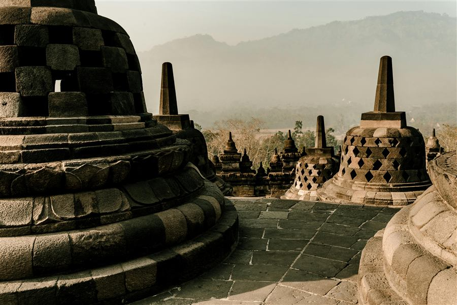
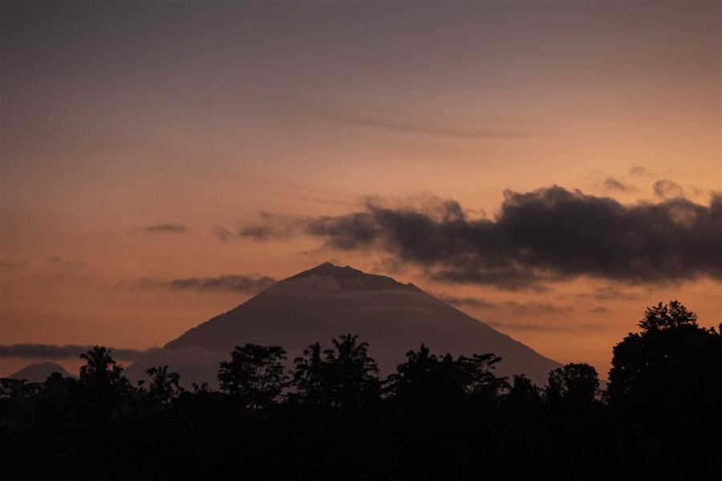

Java · Acceso desde Amanjiwo
Borobudur al amanecer en privado
El primer capítulo del viaje: historia milenaria antes del bullicio.
Bassa Complete es el gran viaje de slow luxury por Indonesia: entre 18 y 21 días que recorren Java, Bali y Raja Ampat (o Komodo) con transiciones en chárter privado. No es un resumen apresurado de highlights, sino tiempo real en cada destino — el mismo ritmo pausado de Bassa Culture, Bassa Reset/Moon y Bassa Explorer, encadenado en un único viaje.
| Duración orientativa | 18–21 días. El ejemplo desarrollado en esta página son 20 días / 19 noches. |
| Estilo | Slow luxury de larga duración · combina Java, Bali y Raja Ampat o Komodo · transiciones en chárter privado. |
| Zona principal | Java + Bali + Raja Ampat o Komodo — el archipiélago indonesio de extremo a extremo. |
| Para quién | Viajeros que disponen de tiempo y quieren profundidad real en cada destino, no un resumen. |
| Mejor época | Mayo-junio o septiembre-octubre — ventanas en las que Java, Bali y Raja Ampat coinciden en buena época. |
Bassa Complete parte de una constatación: las tres grandes regiones de Indonesia —los templos milenarios de Java, las villas de slow luxury de Bali y los arrecifes virgenes de Raja Ampat— merecen, cada una, un viaje propio. La mayoría de itinerarios de "Indonesia en dos semanas" intentan meter las tres en un borrón de traslados y medias jornadas. Bassa Complete no.
La estructura sigue un arco natural: primero Java, para profundidad cultural y los templos de Borobudur; después Bali, para descanso y momentos en villas privadas; y finalmente Raja Ampat o Komodo, como capítulo final de expedición. Los vuelos chárter privados gestionan las transiciones, así que ningún día se pierde en logística de aeropuertos comerciales.
Las experiencias que ves a continuación son ejemplos reales de lo que puede formar parte de tu Bassa Complete — no un álbum cerrado, sino el punto de partida sobre el que diseñamos tu viaje.
Una selección de experiencias que diseñamos habitualmente dentro de esta línea. Cada Bassa Complete es distinto: estas son referencias para inspiraros, no una lista cerrada.

El primer capítulo del viaje: historia milenaria antes del bullicio.

El verde infinito de Bali, lejos de las rutas habituales.

El cierre del viaje: tres metros de prehistoria, cara a cara.
Si el viaje termina en Raja Ampat en lugar de Komodo, esto os espera.
En esencia sí, pero diseñado como un único viaje y no como tres viajes pegados. La estructura sigue un arco natural: Java para profundidad cultural, Bali para descanso y desconexión (o romance), y Raja Ampat o Komodo como capítulo final de expedición, con transiciones organizadas en chárter privado entre cada etapa.
Entre 18 y 21 días, sin contar los vuelos internacionales. El ejemplo de referencia de esta página son 20 días (19 noches): aproximadamente una semana en Java, una semana en Bali y el resto en Raja Ampat o Komodo.
No. Bassa Complete es un punto de partida, no un paquete cerrado. Las experiencias de esta página son ejemplos de lo que puede incluir tu viaje; el itinerario final, los alojamientos y el orden de las etapas se ajustan contigo durante el diseño del viaje.
Java, Bali y Raja Ampat tienen temporadas secas que no coinciden del todo (Java: mayo-septiembre; Bali: abril-octubre; Raja Ampat: octubre-abril). Las mejores ventanas para Bassa Complete suelen ser mayo-junio o septiembre-octubre, cuando la mayoría de los tramos tienen buen tiempo. Con menos margen, ajustamos el orden de las etapas según tus fechas.
Cuéntanos cuántos días tenéis disponibles y si preferís cerrar el viaje en Komodo o en Raja Ampat. A partir de ahí diseñamos el recorrido completo.
Diseña tu viaje